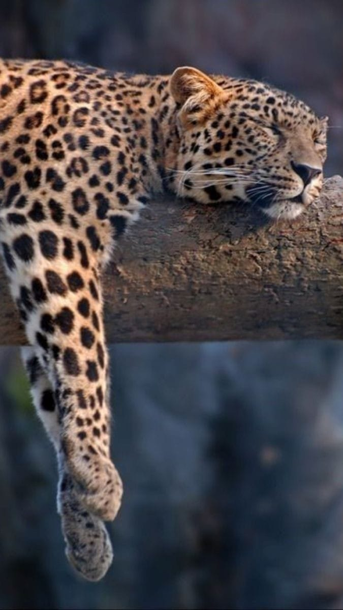
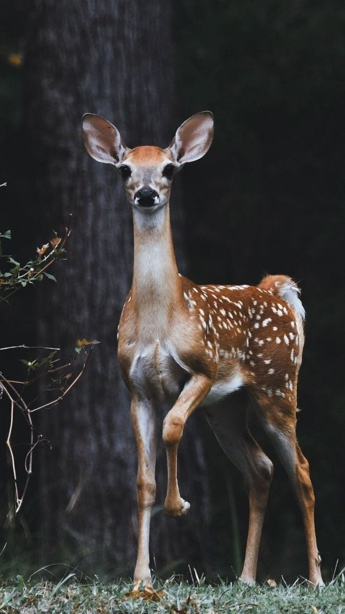
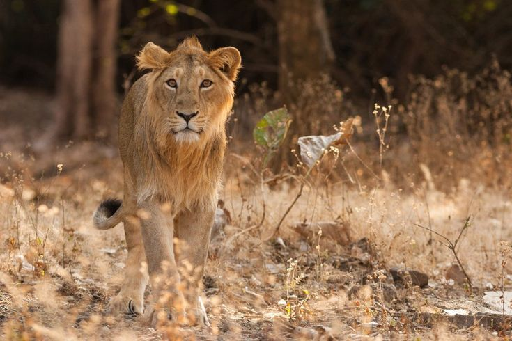
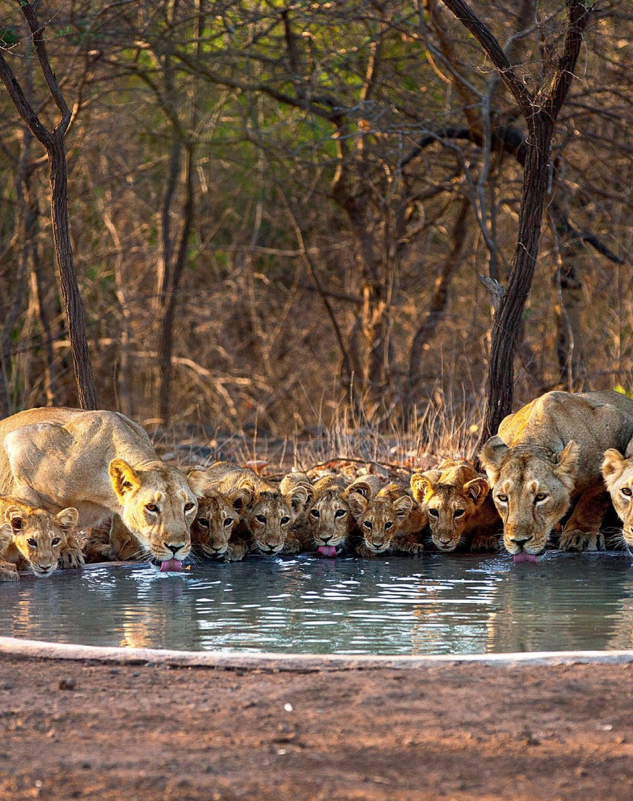
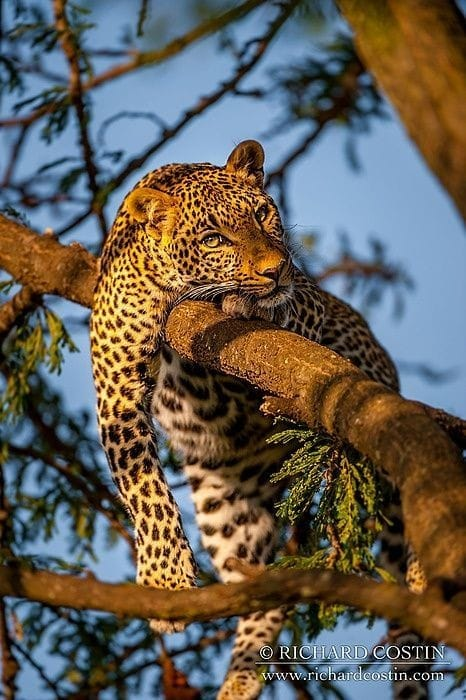
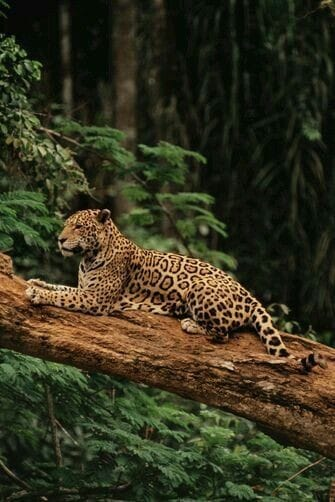
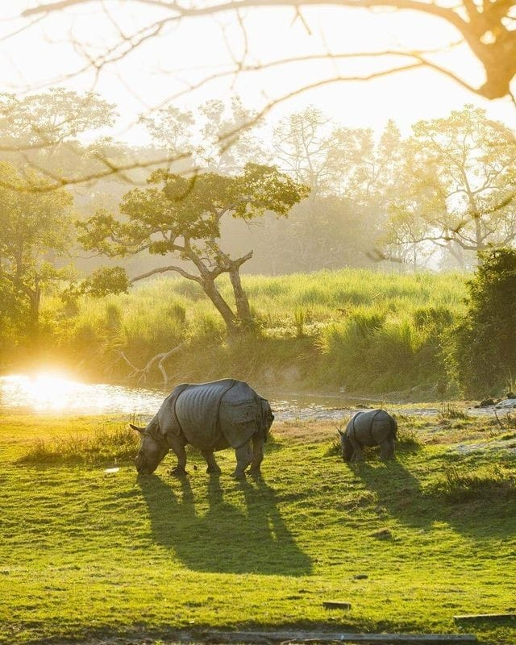
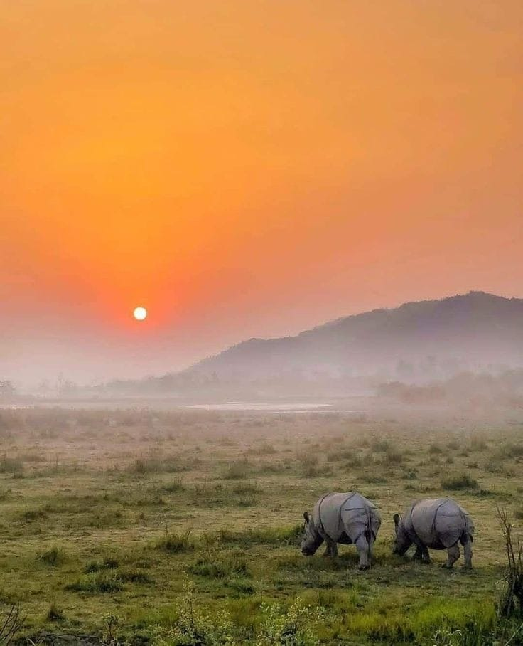
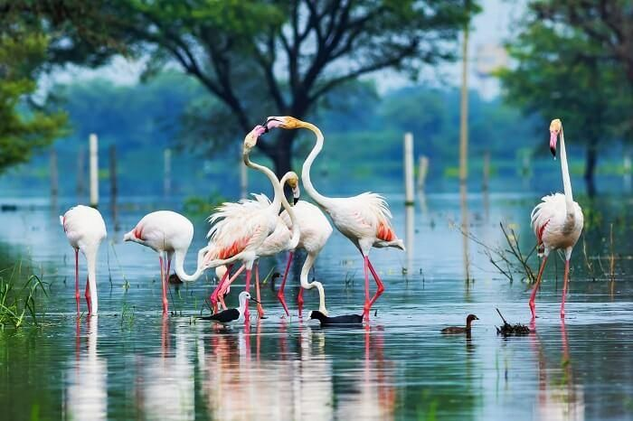
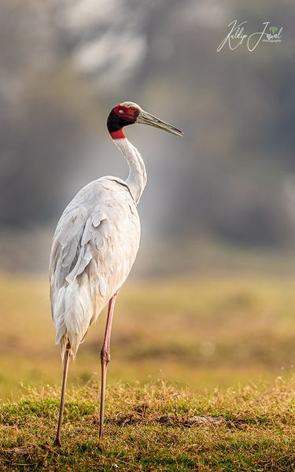

The first national park of India certainly deserves the first place on our list. Located in the terai region of Uttarakhand, it was specifically created to protect the Bengal tiger, in 1936. Its lush hills all around, thick forest cover and wide, open grasslands are prime big cat territory. Moreover, the park is home to around 650 species of birds, so remember to bring a camera. All five zones of Corbett National Park — Dikhala, Bijrani, Jhirna, Durgadevi and Dhela — are open for tourists.
1,318.54 square kilometres
Tiger, gharial, elephant, spotted deer, leopard, barking deer.
Pallas's fish eagle, crocodile, gharial
15th November to 15th June
₹200 onwards
Ramnagar (1 km)
Pantnagar airport (82 km)
 This has to be the most unique protected territory in India, because this is the only home of the Asiatic lion, the true king of the jungle, in the world. Located in the Gir Somnath, Junagadh and Amreli districts of Gujarat, it is a vast scrub and savannah forest, the kind in Africa that is inhabited by lions. As per estimates, the area has more than 2,000 species of wildlife, so all nature lovers are in for a definitive treat.
1,412 square kilometres
Asiatic lion, leopard, jungle cat, striped hyena, Bengal fox, golden jackal, spotted deer, four-horned antelope, sambar.
Bonelli’s eagle, tawny eagle, king vulture, crested serpent eagle, painted stork, crested hawk eagle, pelican.
16th October to 15th June
₹150 onwards
Junagadh (77 km)
Sardar Vallabhbhai Patel International Airport, Ahmedabad (336 km)
 One of the best places India to see the tiger, Ranthambore National Park is located in the Sawai Madhopur district of Rajasthan. This is where the world’s most famous tiger, Machhli, thrived; she has been featured in various National Geographic and Discovery Channel documentaries. Moreover, the national park is home to Ranthambore Fort, which gives this place a historical significance. Apart from seeing the various structures within the fort, you might also be able to see tigers, many of whom either live or are frequent visitors here.
1,334 square kilometres
Tiger, spotted deer, sambar, nilgai, desert fox, chinkara, sloth bear, wild boar, golden jackal.
Peafowl, sarus crane, kingfisher, owl, crested serpent eagle, pelican, stork, flamingo.
16th October to 30th June
₹100 onwards
Sawai Madhopur (14 km)
Jaipur International Airport (182 km)
 If any place is bestowed with the status of a UNESCO World Heritage Site, it is definitely worth a visit. The honour is well deserved because Kaziranga is one of the last strongholds of the endangered one-horned rhino (the rhinos in Africa are two-horned). The dominating feature of this protected territory is the wide, open grasslands, known as doors in the local language. Apart from these iconic animals, the park is home to several other large mammals, including the Indian elephant; the wild water buffalo, easily distinguishable by its massive horns; and the gaur (Indian bison), which weighs 1,500 kg on average.
430 square kilometres
One-horned rhino, Indian elephant, wild water buffalo, gaur, swamp deer, hog deer, tiger, leopard.
Ruddy shelduck, bar-headed goose, kingfisher, Eurasian eagle owl, Pallas’ fish eagle, Himalayan griffon, cinereous vulture.
1st November to 30th April
₹50 onwards
Nagaon (74.5 km)
Lokpriya Gopinath Bordoloi International Airport, Guwahati (213 km)
 Formerly known as Bharatpur Bird Sanctuary, Keoladeo National Park is a manmade avifauna reserve in Rajasthan. This beautiful habitat, with over 370 species of birds, is a treat for ornithologists and birdwatchers who visit the park often to spot many resident and migratory birds. And that’s not all, Keoladeo is home to some mammals, amphibians and reptiles as well. About 380 species of flora add to the beauty of this bird sanctuary and make it a must-visit. The park has well-defined pathways that can be explored on foot or in cycle-rickshaws, with rickshaw pullers as trained guides. Keoladeo, which was a duck-hunting ground for the Maharajas in the 19th century, was declared a national park in 1982 and a UNESCO World Heritage Site in 1985.
29 square kilometres
Chital deer, nilgai, blackbuck, wild boar, Indian porcupine, leopard, golden jackal, striped hyena
: Basking python, painted stork, Siberian crane, greater spotted eagle, imperial eagle, cormorant, heron, spoonbill
Year-round (August to November recommended)
₹75 onwards
Bharatpur Junction (26 km)
Kheria Airport, Agra (56 km)
 